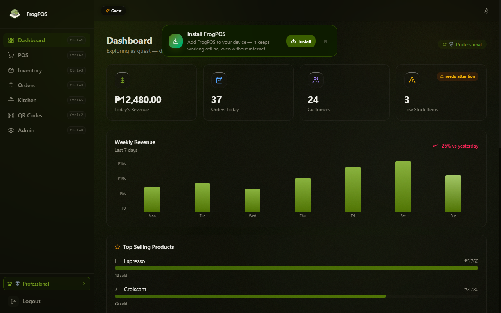

I Built a Multi-Tenant POS in One Month — Here's What I Learned

Three months ago, a friend reached out with a proposition: "I'll handle the marketing and strategy — you build the POS." It was one of those offers that sounds exciting for exactly five seconds before the reality sinks in.
A point-of-sale system. Multi-tenant. Offline-first. In one month.
I was a Computer Science student with React and TypeScript experience, but I had never shipped a production SaaS before. The timeline was tight, the budget was practically zero, and the feature list was ambitious — QR self-ordering, a kitchen display system, 80mm thermal receipts, ingredient-based inventory, customer credit tracking, and full English/Tagalog localization.
I said yes anyway.
The First Week — Architecture & Panic
The first thing I did was reach for the tools I already knew: React on the frontend, Node.js on the backend. But I needed to move fast. I chose Hono — a lightweight, fast API framework — paired with Neon's serverless PostgreSQL. The database architecture had to support multi-tenancy from day one, with row-level security so each store's data was completely isolated.
This was my first time designing a multi-tenant schema. I spent two days on the database model alone, sketching out how stores, users, orders, menu items, and inventory would relate. I used AI tools to generate migration files and seed data, but I reviewed every line. The schema is still largely unchanged from that first week.

The Second Week — Building the Core Loop
With the database in place, I built the core ordering flow: a customer places an order → it appears on the kitchen display → the order is fulfilled → a receipt is printed. This sounds simple, but each step had edge cases. What happens when the internet drops mid-order? What if the thermal printer runs out of paper? What if two customers order the same last item?
The offline-first requirement was the hardest technical challenge. I implemented a local queue that stores sales in IndexedDB when offline, then auto-syncs when the connection returns. AI tools helped me prototype the sync logic, but I had to write the conflict resolution myself — last-write-wins works for orders, but not for inventory counts.
The Third Week — Features, Features, Features
Week three was a sprint. QR self-ordering (customers scan a QR code at their table, browse the menu, and pay without waiting for a server). Split billing. A kitchen display system that shows incoming orders in real time. English/Tagalog localization so the interface works for both customers and staff.
I used AI extensively here — generating component templates, writing SQL queries, and even suggesting UX flows. But every piece of generated code went through review. The AI was my junior developer; I was the senior engineer. It could write the first draft, but I had to understand every line to ship something reliable.
The Fourth Week — Polish & Ship
The last week was about the things nobody sees: error handling, loading states, edge cases, and the 80mm thermal receipt format. Getting a browser to print a properly formatted receipt on a thermal printer turned out to be surprisingly difficult — the escape sequences for the printer's command language (ESC/POS) required exact byte sequences.

I shipped on day 29. The marketing site went live at frogrest.com, and the POS app at pos.frogrest.com. Real Filipino stores started using it.
What I Learned
- Constraints are a feature, not a bug. A one-month deadline forced me to make hard decisions about what to build and what to skip. The result is a focused product instead of a feature-bloated mess.
- AI tools are multipliers, not replacements. I estimate AI tools saved me 40-50% of development time on boilerplate and repetitive tasks. But every architectural decision, every security boundary, every edge case was mine. The AI couldn't design the multi-tenant schema or debug the offline sync protocol.
- Shipping is a skill. There's a gap between "it works on my machine" and "it works in a restaurant." Real-world conditions — slow networks, older devices, unfamiliar users — revealed issues no amount of local testing could find. The only way to close that gap is to ship.
- The technology stack matters less than the person using it. React, Hono, and Neon were the right choices for this project, but the real differentiator was the willingness to learn fast, ask the right questions, and keep going when things broke.
What's Next
FrogPOS is still live and onboarding stores. I'm working on the next features: payment gateway integration, advanced reporting, and a self-service menu editor. The project started as a one-month challenge, but it's turning into a real product that serves real businesses.
If you're building something ambitious with limited resources, my advice is simple: start before you're ready. You'll figure out the rest on the way down.